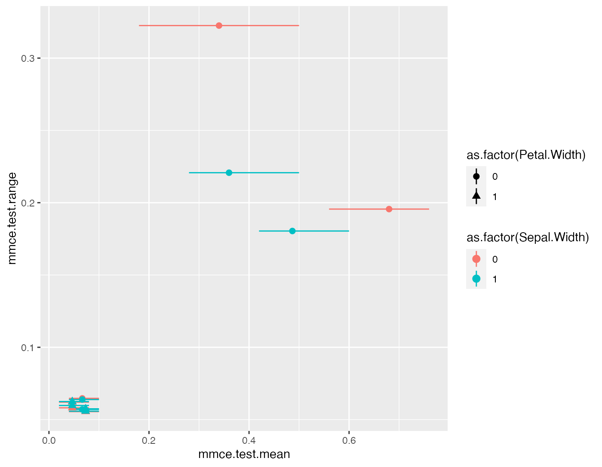

In some cases, you might want to evaluate a Prediction() or ResamplePrediction() with a Measure (makeMeasure()) which is not yet implemented in mlr. This could be either a performance measure which is not listed in the Appendix or a measure that uses a misclassification cost matrix.
Performance measures and aggregation schemes
Performance measures in mlr are objects of class Measure (makeMeasure()). For example the mse (mean squared error) looks as follows.
str(mse)
## List of 10
## $ id : chr "mse"
## $ minimize : logi TRUE
## $ properties: chr [1:3] "regr" "req.pred" "req.truth"
## $ fun :function (task, model, pred, feats, extra.args)
## ..- attr(*, "srcref")= 'srcref' int [1:8] 118 9 120 3 9 3 26476 26478
## .. ..- attr(*, "srcfile")=Classes 'srcfilealias', 'srcfile' <environment: 0x5596902b5300>
## $ extra.args: list()
## $ best : num 0
## $ worst : num Inf
## $ name : chr "Mean of squared errors"
## $ note : chr "Defined as: mean((response - truth)^2)"
## $ aggr :List of 4
## ..$ id : chr "test.mean"
## ..$ name : chr "Test mean"
## ..$ fun :function (task, perf.test, perf.train, measure, group, pred)
## .. ..- attr(*, "srcref")= 'srcref' int [1:8] 43 9 43 83 9 83 19157 19157
## .. .. ..- attr(*, "srcfile")=Classes 'srcfilealias', 'srcfile' <environment: 0x55969028dc98>
## ..$ properties: chr "req.test"
## ..- attr(*, "class")= chr "Aggregation"
## - attr(*, "class")= chr "Measure"
mse$fun
## function(task, model, pred, feats, extra.args) {
## measureMSE(pred$data$truth, pred$data$response)
## }
## <bytecode: 0x55968f621870>
## <environment: namespace:mlr>
measureMSE
## function(truth, response) {
## mean((response - truth)^2)
## }
## <bytecode: 0x559691533288>
## <environment: namespace:mlr>See the Measure (makeMeasure()) documentation page for a detailed description of the object slots.
At the core is slot $fun which contains the function that calculates the performance value. The actual work is done by function measureMSE (measures()). Similar functions, generally adhering to the naming scheme measure followed by the capitalized measure ID, exist for most performance measures. See the [measures()] help page for a complete list.
Just as Task() and Learner (makeLearner()) objects each Measure (makeMeasure()) has an identifier $id which is for example used to annotate results and plots. For plots there is also the option to use the longer measure $name instead. See the tutorial page on visualization for more information.
Moreover, a Measure (makeMeasure()) includes a number of $properties that indicate for which types of learning problems it is suitable and what information is required to calculate it. Obviously, most measures need the Prediction() object ("req.pred") and, for supervised problems, the true values of the target variable(s) ("req.truth"). You can use functions getMeasureProperties (MeasureProperties()) and hasMeasureProperties (MeasureProperties()) to determine the properties of a Measure (makeMeasure()). Moreover, listMeasureProperties() shows all measure properties currently available in mlr.
listMeasureProperties()
## [1] "classif" "classif.multi" "multilabel" "regr"
## [5] "surv" "cluster" "costsens" "req.pred"
## [9] "req.truth" "req.task" "req.feats" "req.model"
## [13] "req.prob"Additional to its properties, each Measure (makeMeasure()) knows its extreme values $best and $worst and if it wants to be minimized or maximized ($minimize) during tuning or feature selection.
For resampling slot $aggr specifies how the overall performance across all resampling iterations is calculated. Typically, this is just a matter of aggregating the performance values obtained on the test sets perf.test or the training sets perf.train by a simple function. The by far most common scheme is test.mean (aggregations()), i.e., the unweighted mean of the performances on the test sets.
str(test.mean)
## List of 4
## $ id : chr "test.mean"
## $ name : chr "Test mean"
## $ fun :function (task, perf.test, perf.train, measure, group, pred)
## $ properties: chr "req.test"
## - attr(*, "class")= chr "Aggregation"
test.mean$fun
## function (task, perf.test, perf.train, measure, group, pred)
## mean(perf.test)
## <bytecode: 0xc0a82e8>
## <environment: namespace:mlr>All aggregation schemes are objects of class Aggregation() with the function in slot $fun doing the actual work. The $properties member indicates if predictions (or performance values) on the training or test data sets are required to calculate the aggregation.
You can change the aggregation scheme of a Measure (makeMeasure()) via function setAggregation(). See the tutorial page on resampling for some examples and the ?aggregations() help page for all available aggregation schemes.
You can construct your own Measure (makeMeasure()) and Aggregation() objects via functions makeMeasure(), makeCostMeasure(), makeCustomResampledMeasure() and makeAggregation(). Some examples are shown in the following.
Constructing a performance measure
Function makeMeasure() provides a simple way to construct your own performance measure.
Below this is exemplified by re-implementing the mean misclassification error mmce. We first write a function that computes the measure on the basis of the true and predicted class labels. Note that this function must have certain formal arguments listed in the documentation of makeMeasure(). Then the Measure (makeMeasure()) object is created and we work with it as usual with the performance() function.
See the R documentation of makeMeasure() for more details on the various parameters.
# Define a function that calculates the misclassification rate
my.mmce.fun = function(task, model, pred, feats, extra.args) {
tb = table(getPredictionResponse(pred), getPredictionTruth(pred))
1 - sum(diag(tb)) / sum(tb)
}
# Generate the Measure object
my.mmce = makeMeasure(
id = "my.mmce", name = "My Mean Misclassification Error",
properties = c("classif", "classif.multi", "req.pred", "req.truth"),
minimize = TRUE, best = 0, worst = 1,
fun = my.mmce.fun
)
# Train a learner and make predictions
mod = train("classif.lda", iris.task)
pred = predict(mod, task = iris.task)
# Calculate the performance using the new measure
performance(pred, measures = my.mmce)
## my.mmce
## 0.02
# Apparently the result coincides with the mlr implementation
performance(pred, measures = mmce)
## mmce
## 0.02Constructing a measure for ordinary misclassification costs
For in depth explanations and details see the tutorial page on cost-sensitive classification.
To create a measure that involves ordinary, i.e., class-dependent misclassification costs you can use function makeCostMeasure(). You first need to define the cost matrix. The rows indicate true and the columns predicted classes and the rows and columns have to be named by the class labels. The cost matrix can then be wrapped in a Measure (makeMeasure()) object and predictions can be evaluated as usual with the performance() function.
See the R documentation of function makeCostMeasure() for details on the various parameters.
# Create the cost matrix
costs = matrix(c(0, 2, 2, 3, 0, 2, 1, 1, 0), ncol = 3)
rownames(costs) = colnames(costs) = getTaskClassLevels(iris.task)
# Encapsulate the cost matrix in a Measure object
my.costs = makeCostMeasure(
id = "my.costs", name = "My Costs",
costs = costs,
minimize = TRUE, best = 0, worst = 3
)
# Train a learner and make a prediction
mod = train("classif.lda", iris.task)
pred = predict(mod, newdata = iris)
# Calculate the average costs
performance(pred, measures = my.costs)
## my.costs
## 0.02666667Creating an aggregation scheme
It is possible to create your own aggregation scheme using function makeAggregation(). You need to specify an identifier id, the properties, and write a function that does the actual aggregation. Optionally, you can name your aggregation scheme.
Possible settings for properties are "req.test" and "req.train" if predictions on either the training or test sets are required, and the vector c("req.train", "req.test") if both are needed.
The aggregation function must have a certain signature detailed in the documentation of makeAggregation(). Usually, you will only need the performance values on the test sets perf.test or the training sets perf.train. In rare cases, e.g., the Prediction() object pred or information stored in the Task() object might be required to obtain the aggregated performance. For an example have a look at the definition of function test.join (aggregations()).
Example: Evaluating the range of measures
Let’s say you are interested in the range of the performance values obtained on individual test sets.
my.range.aggr = makeAggregation(id = "test.range", name = "Test Range",
properties = "req.test",
fun = function(task, perf.test, perf.train, measure, group, pred) {
diff(range(perf.test))
}
)perf.train and perf.test are both numerical vectors containing the performances on the train and test data sets. In most cases (unless you are using bootstrap as resampling strategy or have set predict = "both" in makeResampleDesc()) the perf.train vector is empty.
Now we can run a feature selection based on the first measure in the provided list and see how the other measures turn out.
# mmce with default aggregation scheme test.mean
ms1 = mmce
# mmce with new aggregation scheme my.range.aggr
ms2 = setAggregation(ms1, my.range.aggr)
# Minimum and maximum of the mmce over test sets
ms1min = setAggregation(ms1, test.min)
ms1max = setAggregation(ms1, test.max)
# Feature selection
rdesc = makeResampleDesc("CV", iters = 3)
res = selectFeatures("classif.rpart", iris.task, rdesc, measures = list(ms1, ms2, ms1min, ms1max),
control = makeFeatSelControlExhaustive(), show.info = FALSE)
# Optimization path, i.e., performances for the 16 possible feature subsets
perf.data = as.data.frame(res$opt.path)
head(perf.data[1:8])
## Sepal.Length Sepal.Width Petal.Length Petal.Width mmce.test.mean
## 1 0 0 0 0 0.68000000
## 2 1 0 0 0 0.34000000
## 3 0 1 0 0 0.48666667
## 4 0 0 1 0 0.06666667
## 5 0 0 0 1 0.04666667
## 6 1 1 0 0 0.36000000
## mmce.test.range mmce.test.min mmce.test.max
## 1 0.20 0.56 0.76
## 2 0.32 0.18 0.50
## 3 0.18 0.42 0.60
## 4 0.06 0.04 0.10
## 5 0.06 0.02 0.08
## 6 0.22 0.28 0.50
pd = position_jitter(width = 0.005, height = 0)
p = ggplot(aes(x = mmce.test.range, y = mmce.test.mean, ymax = mmce.test.max, ymin = mmce.test.min,
color = as.factor(Sepal.Width), pch = as.factor(Petal.Width)), data = perf.data) +
geom_pointrange(position = pd) +
coord_flip()
print(p)
The plot shows the range versus the mean misclassification error. The value on the y-axis thus corresponds to the length of the error bars. (Note that the points and error bars are jittered in y-direction.)